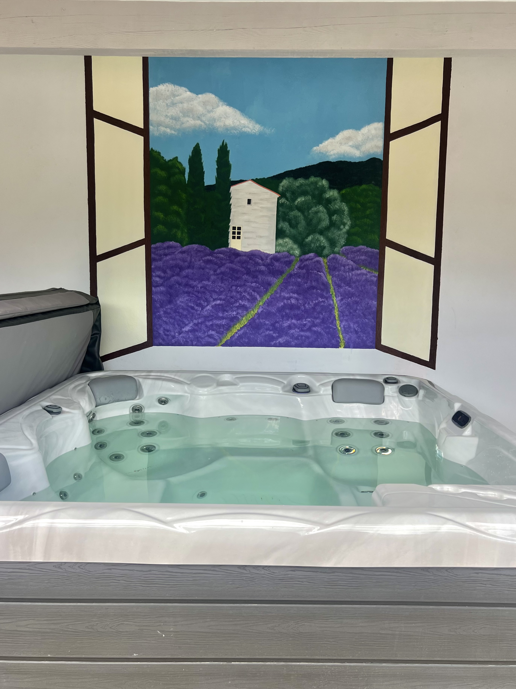

La Provence
J’ai peint cette fresque murale sur le mur d’un abri de jacuzzi, situé dans le sud-est de la France. À la demande des propriétaires, j’ai représenté un champ de lavande accompagné d’un petit cabanon, en lien avec l’environnement local et l’ambiance provençale du lieu.